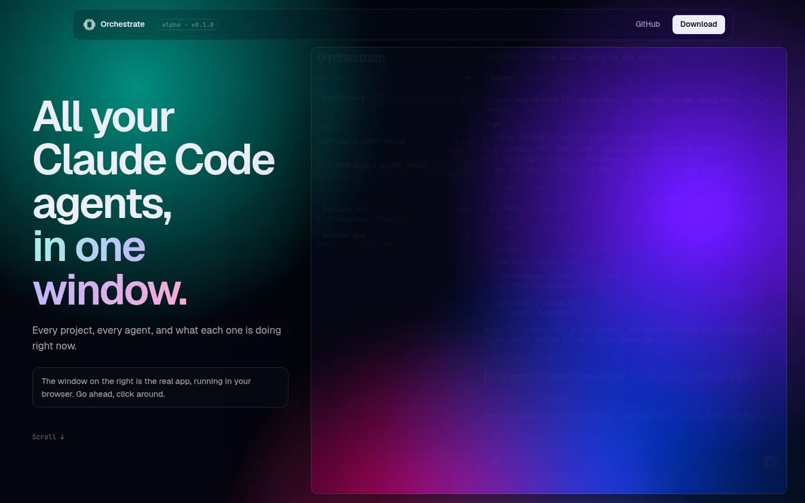

Orchestrate
Open-source desktop app
Orchestrate is a desktop app for running Claude Code agents in parallel. Each agent works in its own Git worktree, and the app shows live output, lets you stop and resume agents, review their diffs and merge their work.
- A background host keeps agents running after the window closes. Other machines, or an iPhone, can control them over Tailscale.
- Mostly built by its own agents: 180+ agent branches merged in under two weeks.
- v0.1.0 is out for Linux, macOS and Windows.